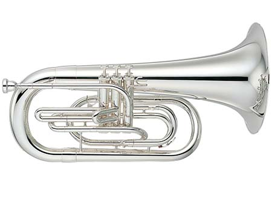

Brass Family
The brass family is a family of musical instruments which is easily distinguisable by recognising it's usually shiny metallic surface and distinctive shape. All brass instruments have roughly the same shape, starting from a mouthpiece, through a tube and finally out of the bell shaped mouth. Examples of brass instruments are the horn, trombone and prehaps most famous, the trumpet.To learn more click HERE.
Brass Instruments
The BTR-300 Bb Trumpet is a student grade trumpet that would give the students the confidence to grow into proud musicians, especially for those who just started learning the basics of the trumpet. The Bundy BTR-300 (the
full name of the trumpet), has a large bore which makes it easier for beginners to blow.
Click here for more info.

At an attractive rental price, this performance grade Bb trumpet is ready for use in any concert upon receiving. The John Packer 251SW has been carefully designed in collaboration with Dr Richard Smith of Smith-Watkins to
ensure the instrument benefits from the same attention to detail as Smith-Watkins instruments.
Click here for more info.

The YSL-354 is a student grade Tenor trombone that is designed for beginner students to sound good, as soon as possible, instilling confidence into the student to play centre stage when called upon. The standard models are
durable, high quality trombones which offer a perfect entry into the world of music.
Click here for more info.

The YHR-314II F horn is a single horn that features a superb flexibility, an easy response, and accurate intonation balanced through the entire range. Viable for both performers who needs it for an orchestral performance or
just aspiring students who want to learn the basics of playing the french horn.
Click here for more info.

Different from the usual line up of orchestral instruments, the YEP-202M is a marching Euphonium that offers the mellow and deep tone of a concert Euphonium while allowing it be used in a marching band. Although suited for
marching, it is also convertable, and can be converted between marching and concert, suiting the performer's needs.
Click here for more info.

Originally adapted as a marching brass instrument, mellophones have been seen in orchestral performances due to their unique sounds ranging from rich and vibrant to mellow and soft. The YMP-204MS is not an exception, as it
could very well be the perfect balance between marching and orchestral brass.
Click here for more info.